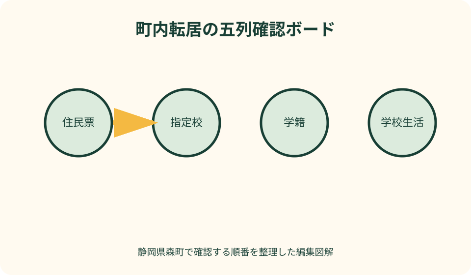
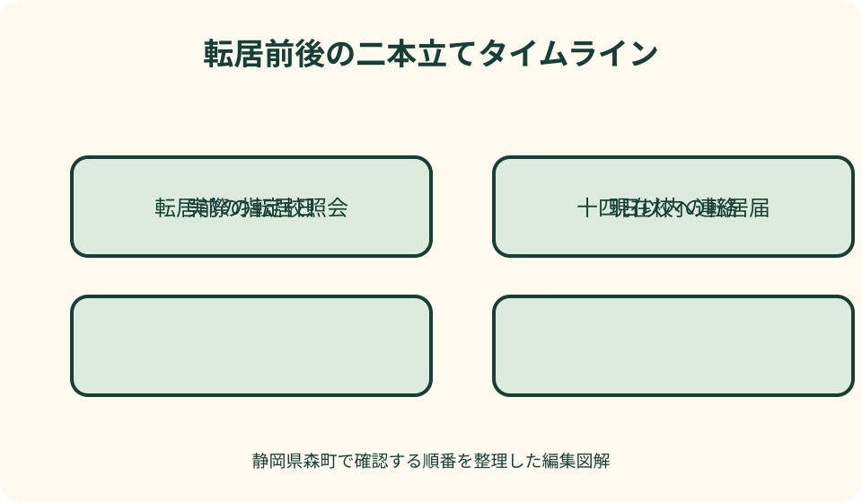

学校・就学・家庭記録｜最終確認 2026-08-10
静岡県森町で町内転居するときの学校確認｜転校・学区・住所変更の順番
森町内の引っ越しでも、住所が変われば住民生活課への転居届が必要です。ただし、住民票の住所変更、教育委員会による指定校の確認、現在校と転居後の学校への連絡は、それぞれ目的が違います。新住所だけを見て家庭で転校の有無を決めず、転居日、学年、現在校、新住所をそろえて森町学校教育課へ確認するのが出発点です。

編集イラスト結論：住所、指定校、学校連絡を三本に分ける
町内転居で最初に書き出すのは、現在の住所、新しい住所、実際に住み始める日、児童生徒の学年、現在通う学校です。この五項目がそろうと、住民生活課には転居届を、学校教育課には指定校と就学手続を、学校には在籍と引継ぎを尋ねられます。
住所を変える届出が終われば学校関係も自動的に完結する、とは考えない方が確実です。行政内部で情報が連携される範囲や保護者が受け取る書類を、転居前に学校教育課へ確認し、次の担当と期限をメモします。
反対に、学校へ先に話しただけで住民異動が済むわけでもありません。森町公式の引越案内では、町内で住所を異動したときの転居届は、異動した日から十四日以内とされています。将来の日付を転居日として先に届ける手続ではありません。
この記事は個別住所の指定校や、現在校への継続通学の可否を決めるものではありません。地番の読み違い、年度途中の例外、家庭事情もあり得るため、最終確認は森町教育委員会の回答と交付書類に置きます。
町内転居で起きる五つの確認を一覧にする
第一は住民異動です。誰が、いつ、どの住所へ移ったかを住民票へ反映する手続であり、就学校を選ぶ希望調査とは役割が異なります。届出人、本人確認書類、代理時の書類は、住民生活課の最新案内で確かめます。
第二は指定校です。文部科学省は、複数の小中学校がある市町村では、教育委員会が就学校を指定し、多くの教育委員会が通学区域を設定して指定すると説明しています。物件広告や近所の話だけでは確定できません。
第三は転校の有無です。新住所の指定校が現在校と同じなら、通常の転校とは異なる連絡になります。異なる場合は、いつまで現在校へ通い、いつから新しい学校へ移るのかを学校教育課と両校へ確認します。
第四は学校生活の引継ぎ、第五は通学経路です。教科書や教材、集金、端末、保健関係、緊急連絡先を整理する作業と、朝夕に新しい道を歩いて危険箇所を確認する作業は、別の担当と期限を置きます。
転居日が決まる前に学校教育課へ伝えること
相談時は「森町内で引っ越します」だけで終えず、現在住所、新住所、転居予定日、学校名、学年、きょうだいの有無を伝えます。新住所が集合住宅なら棟・部屋まで、地番と住居表示を取り違えないよう契約書類も手元に置きます。
尋ねる順番は、新住所の指定校、現在校と同じか、異なる場合の切替日、保護者が受け取る書類、学校へ連絡する時期です。一度に答えが出ない事項は、誰が調べていつ折り返すかを記録します。
売買契約や賃貸借契約の前で新住所が未確定なら、候補住所として相談できるかを尋ねます。仮の相談結果は正式指定ではないため、契約後や転居日確定後に再確認する日を予定表へ入れておきます。
子ども本人には、まだ決まっていないことを決定事項のように伝えません。「役場と学校へ確認中」「何日に結果を共有する」と区切ると、不確かな噂が家族内で広がるのを防げます。

住所と学区から指定校を確認する
森町公式の学校一覧には、森小学校、宮園小学校、飯田小学校など町立校の名称と所在地が掲載されています。ただし、所在地が最も近い学校が自宅の指定校だとこの記事から判断することはできません。
地図アプリの直線距離、郵便番号、自治会名は、問い合わせを助ける材料にはなりますが、就学校指定の回答そのものではありません。境界付近や新しい地番では、住所を一字ずつ読み上げて確認します。
文部科学省の案内では、就学校の指定変更について、市町村教育委員会が要件と手続を定めて公表し、保護者の申立てを受けて判断します。「隣の家が別の学校だから」という類推は、個別確認の代わりになりません。
回答を得たら、確認日、担当課、伝えた住所、指定された学校名、次に必要な手続を一組で残します。口頭の学校名だけを家族へ送ると、住所の前提が変わったときに検証できなくなります。
転校になる場合の連絡順を決める
指定校が変わると確認できたら、まず現在校へ転居予定と教育委員会への相談状況を伝えます。最終登校日を家庭だけで決めず、学籍関係の書類や学校間の引継ぎがどの順で進むかを聞きます。
次に、新しい学校へ保護者から連絡する時期と方法を確認します。教育委員会から先に連絡するのか、保護者が電話するのかを曖昧にすると、双方が相手の連絡を待つ状態になりかねません。
学校へ伝える生活情報は、緊急連絡先、健康上の配慮、アレルギー、登下校後の居場所、きょうだい関係などです。診断や支援内容を公開範囲の広い連絡網へ載せず、誰にどの方法で伝えるか学校へ相談します。
転校日は荷物の搬出日と同じとは限りません。引っ越し、住民異動、最終登校、初登校を別々の行に置き、子どもが授業を受けない空白日が生じないよう両校と調整します。
現在校へ通い続けたいときの考え方
森町は、就学すべき学校を町の通学学校指定規則により指定し、基準を設けて指定校変更の申立てを受け付けると案内しています。希望を伝えることと、変更が認められることは同じではありません。
町公式の掲載基準には「学期途中の町内転居」について学期終了までという例があり、始業日以前の転居は許可基準外との注記もあります。年度や事情を問わず現在校へ通える、と一般化しないでください。
申立てを検討するなら、転居日、希望する期間、理由、通学方法、送迎担当、緊急時の迎えを具体化します。審査の結論を記事や不動産会社が約束することはできず、教育委員会の個別判断を待ちます。
認められる期間が限定される場合は、その終了後の学校、必要な再手続、子どもへ伝える時期も確認します。「ひとまず継続」の一言だけでは、次の学期や年度の準備が抜けます。
転校しない場合にも学校連絡は必要
指定校が変わらず在籍校も同じ場合でも、住所と緊急連絡先の更新は必要です。担任への口頭連絡だけで済むか、学校所定の変更届があるか、校務システムへの反映日を確認します。
登校班や集合場所、スクールバス、保護者引渡し場所の扱いは学校や地域で異なります。同じ学校だから以前の集合場所へ通い続けられると思い込まず、新住所を伝えて新しい集合方法を聞きます。
学校から郵送される通知、家庭訪問先、緊急時の迎え先も更新対象になり得ます。保護者の電話番号が同じでも住所欄だけ古い、という残り方を避けるため、変更項目を一覧で渡します。
児童クラブや習い事、医療機関など学校外の連絡先は、学校の住所変更だけでは更新されません。家庭の一覧表を用意し、学校手続が完了した後に関係先を一件ずつ確認します。
住民生活課で行う転居届を別枠で管理する
森町公式の引越・新生活ページでは、町内で住所を異動したときは、異動した日から十四日以内に転居届をするよう案内しています。期限は学校への相談日ではなく、実際の住所異動日を基準に確認します。
住民異動の届出では本人確認が行われ、代理人の場合は委任状などで代理権限を確認すると町公式ページに記載されています。誰が窓口へ行くかを決め、最新の本人確認書類一覧を当日に再確認します。
マイナンバーカードを持つ家族がいる場合は、カードの住所変更など同日に確認したい事項を書き出します。子ども本人の来庁要否や暗証番号については、家族構成によって違う可能性があるため住民生活課へ尋ねます。
森町の引っ越しワンストップ案内では、町内転居について転居届のための来庁予定を申請できるとされています。これは来庁予定の申請であり、転居届そのものが不要になるという意味ではない点を区別します。
現在校から受け取る物と返す物を分ける
転校に必要な公的書類は、学校と教育委員会の案内に従います。書類名をインターネット上の一般例から決め打ちせず、誰からいつ受け取り、どこへ提出するのかを現在校に確認します。
返却候補には、学校貸与の端末、充電器、図書、鍵、名札、備品があります。家庭で購入した教材と学校から借りた教材を机の上で分け、付属品まで学校の一覧と照合します。
集金や給食費、教材費は、最終月の精算方法と引落口座の停止時期を尋ねます。返金や追加納付があるときは、金額だけでなく対象期間、受領日、連絡先を記録します。
作品、健康記録、行事写真など、学校から家庭へ返される物もあります。引っ越し荷物に紛れないよう「学校引継ぎ箱」を一つ作り、初登校時に必要な物とは別の袋へ入れます。
新しい学校へ初登校前に聞く十項目
確認項目は、初登校日時、受付場所、登校方法、下校方法、時間割、持ち物、服装、給食開始日、緊急連絡、保護者の来校要否です。学校から案内された項目に絞り、家庭の推測で買い物を急ぎません。
教科書は同じ名称でも版や使用時期が異なることがあります。現在持つ教科書の写真や一覧を用意し、新しい学校で不足する物、継続して使う物、学校から渡される物を確認します。
体操服、上履き、名札、学用品は購入先や指定の有無を尋ねます。初日までにそろわない場合の代替が可能かも相談し、入手できないことを子どもの責任にしません。
配慮や支援を受けている場合は、現在校での方法をそのまま続けられると断定せず、引継ぎの場を依頼します。本人と保護者の希望、学校が確認したい事項、初日までの暫定対応を分けて話します。
通学経路は昼と登下校時間帯に歩く
地図で距離を測っただけでは、歩道の幅、横断箇所、見通し、朝の交通量、雨天時の水たまりは分かりません。可能なら保護者と子どもが実際の登校時間帯に歩き、所要時間を測ります。
下見では、交差点、狭い路肩、用水路、坂道、暗い場所、工事箇所、逃げ込める場所を記録します。危険と感じた地点は写真だけでなく、住所や目印と進行方向を添えて学校へ相談します。
登校班や集合場所がある場合は、個人判断で合流点を変えません。学校が示す方法、集合時刻、欠席時の連絡、保護者当番の有無を確認し、子どもにも自分の言葉で説明してもらいます。
この記事も地図アプリも通学の安全を保証できません。大雨、河川増水、倒木、工事、交通規制など当日の状況で経路は変わるため、学校からの緊急連絡を受け取れる状態を整えます。

森町の地形と移動時間を予定へ織り込む
森町内でも、町なかと北部の山間部では役場や学校までの移動時間が異なります。窓口の受付時刻だけで計画せず、自宅からの往復、駐車、子どもの迎えまで含めた時間を確保します。
橋や河川沿い、山道を通る候補では、普段の最短経路だけでなく、通行しづらいときの連絡方法を家族で決めます。代替経路を実際に使えるかは道路管理者や学校の情報で確かめます。
公共交通を利用する予定なら、時刻表の便が存在することと、子どもの通学に利用できることを分けて確認します。停留所までの徒歩、乗り継ぎ、帰宅時刻、運休時の迎えも一枚にします。
送迎を前提にする場合は、運転者が一人だけの計画にしません。勤務、体調不良、車両故障が重なった日に、誰へ連絡し、学校と何を相談するかを先に決めます。
子どもの気持ちと学習の引継ぎを記録する
手続表には大人の締切だけでなく、子どもが気にしていることを書く欄を設けます。友人への別れの伝え方、初日の席、部活動、委員会、持ち物など、具体的な不安を一つずつ学校への質問へ変えます。
学習面では、現在の単元、未提出物、家庭学習、使用教材を現在校へ確認します。新しい学校の進度との差があっても家庭だけで埋めようとせず、どこから始めるかを担任と相談します。
転居を本人へ伝える時期は、契約や指定校が未確定の段階と、決まった後を分けます。分からないことは分からないと伝え、次に説明する日を約束する方が、曖昧な安心を与えるより誠実です。
眠れない、食欲が落ちる、登校への強い不安が続くなど生活への影響がある場合は、学校の相談窓口や医療機関へつなぐことも検討します。記事は専門家の評価や支援を代替しません。
町内転居を早めに整理する良い点
良い点は、物件契約や引っ越し業者の日程だけでなく、子どもの学校切替日を家族の工程表へ入れられることです。手続同士の前後関係が見え、最終登校日を過ぎてから不足書類に気づく事態を減らせます。
新住所を早めに学校教育課へ伝えると、「転校する前提」と「現在校を続けたい希望」を分けて質問できます。希望だけを学校へ伝え、正式な指定確認が抜けるという混乱を防げます。
現在校と新しい学校の連絡担当を明確にすれば、同じ説明を何度も子どもにさせずに済みます。健康や支援に関する情報も、必要な相手へ限定して引き継ぐ準備ができます。
通学経路を親子で歩く時間を確保できるのも利点です。地図上の近さと実際の歩きやすさの違いを知り、質問を「危ない気がする」から具体的な地点と時間帯へ変えられます。
森町の案内へ注文したい点
注文したい点は、住民異動、入学・指定校、学校一覧、公共交通の情報が別ページにあり、町内転居の一連の順番が一画面では見えにくいことです。保護者はページを横断して自分の工程表を作る必要があります。
指定校変更の基準が掲載されていても、個々の住所の指定校や申立て結果までウェブ上で確定するものではありません。公式ページに見当たらない条件を、掲載漏れとも許可とも解釈しないことが大切です。
住民異動の窓口と学校教育の窓口が異なるため、一方で得た回答がもう一方の手続を含むか分かりにくい場面があります。問い合わせの終わりに「次に自分から連絡する先」を必ず聞くと迷いを減らせます。
ページは更新されるため、印刷物や保存画像だけでは現在の案内か判断できません。URL、ページ名、閲覧日を一緒に残し、実行直前に受付時間、必要物、連絡先を読み直してください。
代案・結論：日程が確定しないときは二案で持つ
引き渡し日や入居日が確定しないときは、転居が学期中になる案と、休業中になる案を別々に作ります。各案に現在校の最終日、転居届の期限、新しい学校への初回連絡日を置きます。
指定校変更を希望する場合も、認められた案だけで予定を組みません。指定校へ移る案と、変更が認められた場合の案を並べ、教育委員会の決定後に不要な方を消します。
必要書類がそろわない場合は、推測した書類を提出するのではなく、不足名、取得先、取得予定日を担当へ共有します。期限が近いなら、現時点でできる届出や相談の有無を窓口へ尋ねます。
結論は、住所変更を一件の引っ越し作業として閉じないことです。住民票、指定校、学籍、学校生活、通学経路の五列を持てば、どこまで確定し、誰の回答を待っているかが見えます。
大石の視点：物件契約前に学校確認の余白を作る
不動産の案内では、学校までの距離や名称を紹介できても、その住所の指定校を最終決定する立場ではありません。私は、学校名を契約の前提にする家庭ほど、学校教育課へ直接確認する時間を確保すべきだと考えます。
同じ森町内の住み替えでは生活圏が大きく変わらないように見えても、指定校、登校班、送迎時間が変わる可能性があります。内見は室内だけで終えず、平日の朝に周辺道路を見る予定を一度入れます。
売買契約の特約や賃貸借の条件と、教育委員会の学校指定は別の仕組みです。「希望校にならなかったら契約を変えられる」とは限らないため、契約上の判断が必要なら宅地建物取引業者へ具体的に確認します。
学校確認の記録は、物件を選ぶ比較表にも使えます。学校の評判を順位付けするのではなく、子どもの通学時間、家族の送迎可能時間、災害時の迎え、相談中の事項を同じ尺度で並べるのが実用的です。
一枚で使える町内転居チェックリスト
上段には児童生徒名、学年、現在校、現住所、新住所、転居予定日、実際の転居日を書きます。予定と実績を同じ欄に重ねず、日付が変わった履歴も残します。
中央には学校教育課の回答日、指定校、転校の有無、変更申立ての要否、現在校最終日、新しい学校初日を置きます。未回答は空欄ではなく「照会中」と記し、次の確認日を添えます。
下段には転居届日、本人確認書類、カード類の住所変更、学校へ返す物、受け取る物、初日の持ち物、通学経路下見日を置きます。完了欄には担当者のイニシャルと日付を入れます。
家族共有版には個人番号、詳しい診療情報、暗証番号を載せません。原本の保管場所と、学校へ伝える担当だけを記し、必要な情報を必要な相手へ渡す形にします。
問い合わせで使える短い伝え方
学校教育課には「森町内で、現住所から新住所へ何月何日に転居予定です。小学何年で現在は何校です。新住所の指定校と、必要な手続の順を確認したいです」と伝えると、前提がそろいます。
現在校には「町内転居を予定し、指定校を教育委員会へ確認しています。転校となる場合の書類、返却物、最終登校日の相談時期を教えてください」と尋ねます。まだ未確定であることも明示します。
現在校への継続を希望するなら「指定校変更を希望しています。町の基準に該当するか、申立て方法と判断までの目安を確認したいです」と伝え、許可を前提にした表現を避けます。
住民生活課には「森町内で実際に何月何日に転居しました。世帯の対象者、届出人、必要な本人確認書類、同日に確認する住所変更手続を教えてください」と聞き、学校の相談とは分けます。
転居後一週間で見直すこと
最初に、学校と住民票の住所が新住所になっているかを、それぞれの窓口で確認します。家族の一人だけ旧住所のまま、緊急連絡カードだけ未更新という部分的な漏れを探します。
次に、登下校の所要時間と子どもの様子を見ます。下見と実際で違った地点、荷物が多い日の負担、下校時の暗さを記録し、必要なら学校へ具体的に相談します。
貸与品、集金、給食、教材の精算も確認します。口座引落しは処理時期がずれることがあるため、すぐに二重徴収と決めつけず、対象月と明細を両校へ提示します。
最後に、次の一か月で再確認する事項を残します。指定校変更に期限がある場合、支援の引継ぎが途中の場合、通学方法が暫定の場合は、担当と期日を明記します。
まとめ：転居届と転校判断を同じ箱に入れない
静岡県森町内で転居するときは、新住所と転居日を確定し、学校教育課で指定校と転校の有無を確認し、現在校へ引継ぎを相談する順序が基本です。住民生活課の転居届は別の期限で管理します。
現在校へ通い続けたい場合は、希望を早く伝えつつ、町の公表基準と申立て手続に沿って個別判断を受けます。学期途中の扱いを、すべての転居時期や家庭へ広げて解釈しないことが重要です。
通学経路は、学校名が決まった後に地図だけで終えず、親子で登下校時間帯に歩いて確かめます。見つけた課題は地点、時刻、進行方向を添えて学校へ相談し、安全を自己判断で保証しません。
今日できる一歩は、現住所、新住所、転居予定日、学年、現在校を一枚に書くことです。その紙を手元に学校教育課へ連絡すれば、家族の引っ越し予定を正式な確認手順へつなげられます。
公式情報・確認先
掲載内容は次の一次情報を基礎に整理しました。営業、料金、催し、交通は変わるため、出発前または手続き前にリンク先で最新情報を確認してください。
- 引越・新生活（静岡県森町、2026-08-10確認）
- 入学（静岡県森町、2026-08-10確認）
- 戸籍・住民異動に関する届出（静岡県森町、2026-08-10確認）
- 引っ越しワンストップサービス（静岡県森町、2026-08-10確認）
- 森町の小・中学校一覧（静岡県森町、2026-08-10確認）
- 学校教育課（静岡県森町、2026-08-10確認）
- 公共交通（静岡県森町、2026-08-10確認）
- 小・中学校等への就学について（文部科学省、2026-08-10確認）
- 就学すべき学校の指定の変更や区域外就学について（文部科学省、2026-08-10確認）